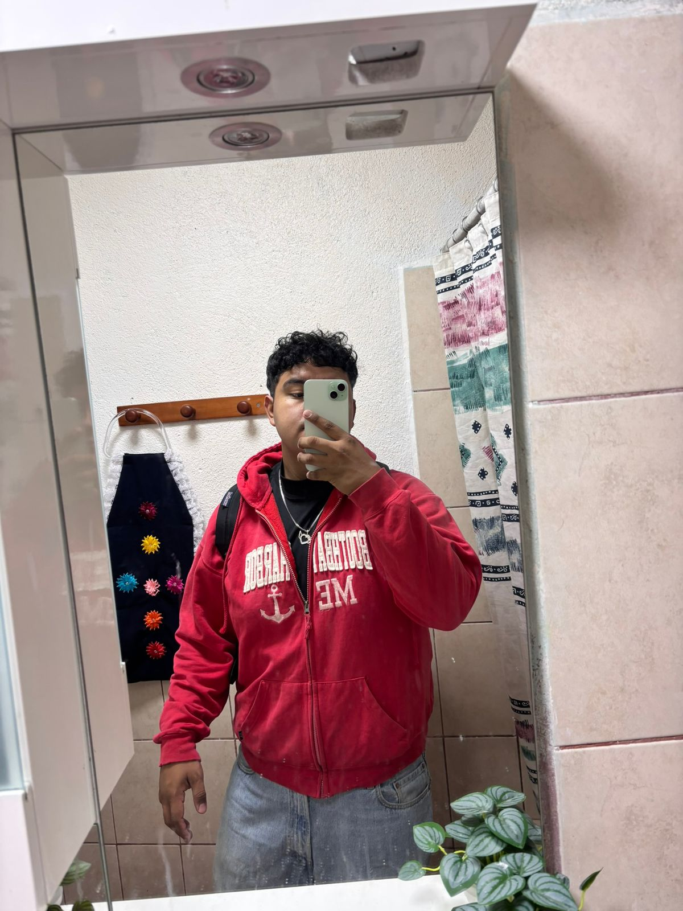
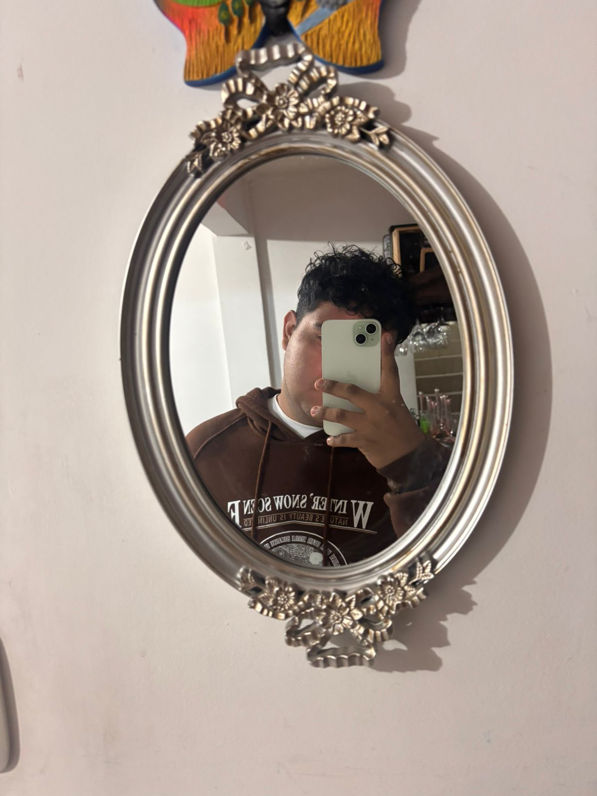
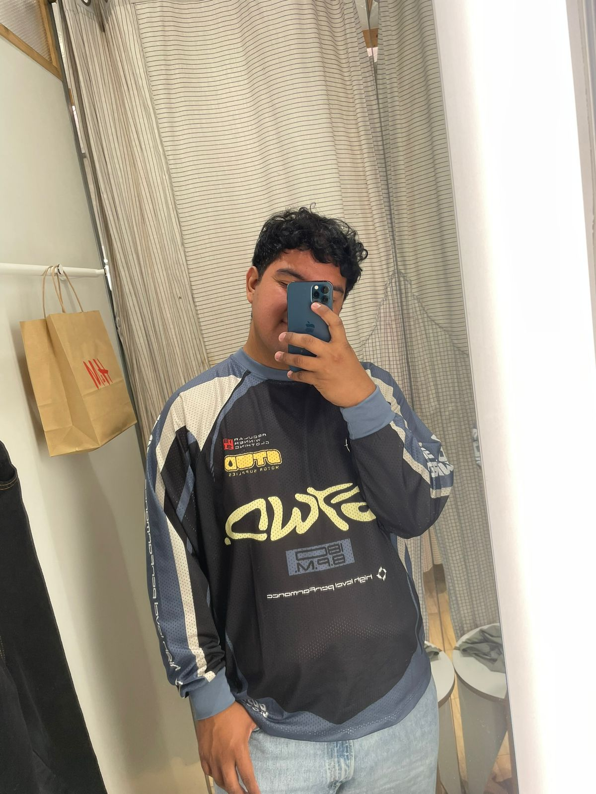

foto 1
"El ama el dolor porque fue lo único que aprendió a sentir."

foto 2
"Fui silencio entre todo su ruido."

foto 3
"El tiempo no espera, pero el alma recuerda."
"No importa cuántas veces te caigas, ni cuán lejos sientas tus sueños; lo importante es que sigas levantándote con el corazón intacto y la mirada firme, porque cada paso, por pequeño que sea, te acerca a la mejor versión de ti mismo, esa que aún no conoces, pero que ya te está esperando."
Informacion
Estudiante de ingenieria en sistemas, amante de los videojuegos, me gusta mucho escuchar musica en mis tiempos libres leo mucho, mi color favorito es el azul y el verde.
Me encanta perderme en la música, descubrir nuevas canciones o playlists mientras dejo que los auriculares me desconecten del mundo.También disfruto jugar videojuegos; me atrapan por las historias, los gráficos y la forma en que te hacen vivir otras realidades por un rato. Para mí, estos hobbies son una forma de relajarme, expresarme y mantenerme conectado con lo que me gusta.
mis metas están enfocadas en crecer tanto personal como académicamente. Quiero descubrir quién soy, encontrar lo que realmente me apasiona y trabajar en ello con disciplina. Aspiro a terminar mis estudios con buenas bases, aprender nuevas habilidades, y rodearme de personas que me inspiren a ser mejor. También busco cuidar mi salud mental
anhelo encontrar mi lugar en el mundo, entender quién soy y hacia dónde voy. Deseo ser escuchado, sentir que mis ideas valen y que puedo marcar una diferencia, aunque sea pequeña. Sueño con vivir experiencias que me hagan sentir vivo, rodearme de personas que me acepten tal como soy y construir un futuro donde pueda ser feliz haciendo lo que amo

Estos son algunos de mis gustos musicales jsjs
InformacionAprende qué te apasiona, qué te motiva, y qué valores son importantes para ti. No vivas según las expectativas de otros; vive alineado con tu verdad. Aprende cosas nuevas siempre, no solo en la escuela. Lee libros, escucha podcasts, toma cursos… el conocimiento es libertad.
InformacionEn Japón, existe una especie de bambú muy particular. Cuando siembras la semilla de este bambú, no sucede nada durante los primeros siete años. Nada brota del suelo. No hay señales visibles de crecimiento, ni una hojita, ni un tallo. Durante todo ese tiempo, el agricultor debe seguir cuidando la tierra: regarla, abonarla, protegerla del sol fuerte o la lluvia intensa. Durante siete largos años, parece que todo ese esfuerzo es inútil. Pero entonces, en el séptimo año, algo asombroso sucede: En solo seis semanas, el bambú crece más de 30 metros de altura.
InformacionAlgunas de mis fotos favoritas jsjs
"El ama el dolor porque fue lo único que aprendió a sentir."
"Fui silencio entre todo su ruido."
"El tiempo no espera, pero el alma recuerda."